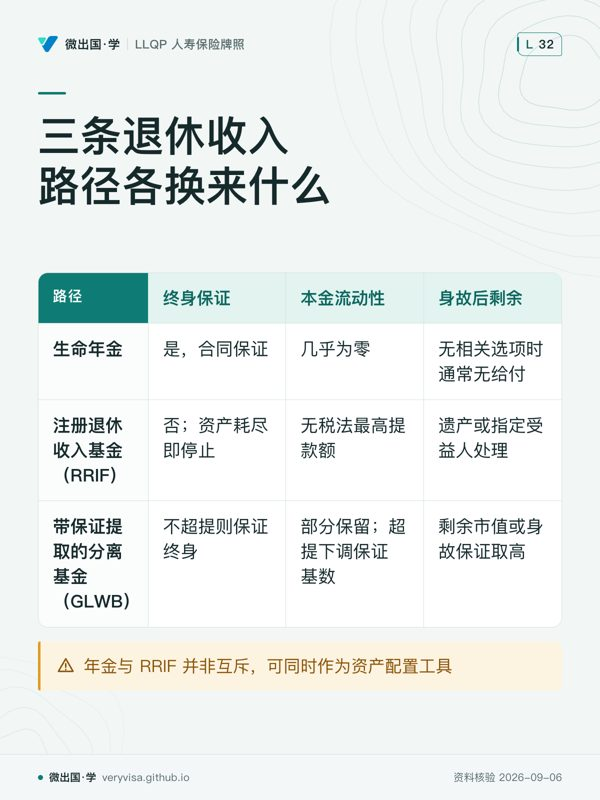

核实日期：2026-09-06｜考纲位置：分离基金与年金（component c2「分析产品」，占本模块 30% 权重）——年金是这一组件里唯一一类"卖的不是资产、卖的是一个承诺"的产品，也是柜台上最容易把"我怕钱不够用"和"我怕活太久"两件事讲反的地方。 与《分离基金：保证、保护与它和共同基金的真正区别》一篇互链：那一篇讲 IVIC 的保证结构与免遗嘱认证/免债权人追索，本篇讲年金的分类、定价与税务。两者共享同一套 Assuris 保护框架与同一批发行方，但解决的是完全不同的风险——分离基金保护的是"本金会不会亏"，年金保护的是"钱会不会花完人还活着"。合同申请表、受益人指定细则与理赔流程留给年金合同专篇，本篇不重复。
这一章要讲清楚一件反直觉的事：多数人以为"投资"和"退休收入"是同一个问题的两种叫法，但年金存在的全部理由，是这两者其实是两种完全不同的风险——投资要解决的是"钱能不能增值"，年金要解决的是"钱会不会比人先花完"。读完这一章，你要能做三件事：分清楚哪些年金分类维度可以自由组合、哪些互斥；给客户算清楚同一笔存款按 prescribed 与 accrual 两种计税方式每年要交多少税、差别到底在哪；以及在 2026 年的加拿大市场上，当客户问"年金现在还有人买吗"时，你能拿出真实还在卖的产品名和现行利率环境作答，而不是背考试口径那句写于 2022 年的抽象定义。
一、制度设计与底层逻辑：年金在赌什么
年金给付通常包含本金返还、投资收益，以及生命年金中的死亡率互助收益：较早身故者留下的资本支持较长寿者继续领取。因此不能写成每个人必定拿回全部本金加利息。定期确定年金按约定期限给付；终身年金将个人无法预知的寿命风险放进保险人的风险池。
年金分成两条完全不同的产品线，考试口径称之为 payout annuity（付息年金，也叫给付型年金）与 accumulation annuity（积累年金，业内俗称"保险 GIC"）。付息年金从一开始就是为了产生一条收入流：本金加利息按约定的频率付给年金受领人（annuitant），这是本章的主角。积累年金则完全不产生收入流，它的目的只是让保险公司代为持有并生息，到期后投保人可以选择转换成付息年金，也可以全额退保拿一次性给付、不受罚金——它更接近一份定期存款，不是本章要讲的"把钱换成收入"这件事。
寿命风险（longevity risk）由谁扛，是划分年金类型最核心的一条线。定期确定年金（term-certain annuity 或 term annuity）付款到约定的年龄或期限为止，与年金受领人是否还活着完全无关——保险公司只是按预定进度把本息还完，如果年金受领人在期限内身故，剩余的钱按合同约定的方式付给受益人。这种产品没有把客户活过给付期的风险转移给保险人，客户仍承担期满后继续生存的收入缺口，保险公司只是一个代收代付的管道。生命年金（life annuity）则完全相反：付款持续到年金受领人身故为止，时间长短取决于这个人的实际寿命。如果这个人活得比精算表预测的长，保险公司要用自己的准备金继续付钱；如果这个人活得比预测的短，且合同既无保证期、退款选项也无幸存受领人安排，身故后不再付款——这正是生命年金能够消除"人活着、钱没了"这种恐惧的机制，代价是万一走得早，这笔钱就"打水漂"了，这也是它定价比定期年金更复杂（要依赖死亡率表）的原因。
除了这条主线，还可从三个维度审视合同组合：覆盖几条生命（单生 single life，还是联合末存 joint and last survivor，通常是配偶双方，第一位身故后给付延续或转移给幸存者，可以设定幸存者领取比例，常见档位 100%、75%、60%、50%）；是否终身（前面讲过的定期 vs 生命）；是否带保证期（guaranteed period，常见 5/10/20 年——如果年金受领人在保证期内身故，受益人领取"保证期内应付款数减去已领款数"的差额，可以一次性拿现值，也可以分期拿；过了保证期就没有该保证期余额，其他退款或身故条款另判）。这些维度受合同结构约束：例如单生终身加 10 年保证、联合末存终身加保证期；定期确定年金本身按固定期限给付，不宜另造“联合末存＋定期＋无保证”的任意组合。另外还有两种针对身故给付的特殊保证：资本保全保证（capital protection guarantee，保障原始保费减已付年金总额后的非负余额，一次性给付叫 cash refund annuity，分期给付叫 installment refund annuity）与首付前身故保证（return of premium guarantee，如果年金受领人在第一次给付前身故，全额退还存入本金）。
保证期的存在，本质是给"寿命对赌"这件事加一层保险，而不是白送的额外奖励。保险公司为了承担"提前身故仍要付满保证期"这份额外风险，必然要在每期给付额上打折——这条规律直接引出下一节要讲的"保证期越长、月给付越低"。
年金还有一个更精巧的组合玩法，叫保险年金（insured annuity）：先买一份永久人寿保险（如 T-100 或终身寿险），死亡给付额等于本人身故后想留给受益人的那笔遗产；保单生效之后，再用另一笔独立的资金买一份单生终身生命年金，年金给付额至少要能覆盖这份人寿保险的保费。年金持续期间用给付支付保费；本人身故时年金终止，人寿保险的死亡给付（免税）付给受益人。这个结构的杠杆效应是：用一笔相对较小的年金本金，"买"到一笔更大的免税遗产，同时本人在世时仍能享有年金收入的一部分作为生活费。顺序不能颠倒——必须先通过核保买到人寿险，才能启动这个策略，如果申请人体检不过关买不了人寿险，整套方案无从谈起。
⚠️
"递延"不是"分期存钱"的意思
很多学员把"递延年金"理解成"分期存款买的年金"，这是错的。区分即期与递延的唯一标准是给付什么时候开始，与存钱的方式无关。即期年金必须用一整笔资金（lump sum）购买，且合同成立后的第一个付款周期内（一年内）就要开始给付；递延年金分"积累期"与"给付期"两个阶段，积累期内存入的钱（可以是一整笔，也可以分批）由保险公司持有并生息，给付从积累期结束时才开始。也就是说，分批注资的即期年金合同并不存在——分批存钱只会出现在积累期，一旦进入给付阶段，年金合同本身已经不接受追加存款了（若要追加，通常是买一份新的年金合同）。
二、2026 现行政策与数字：Assuris 保护、prescribed 税务与算例
1. Assuris 对年金持有人的保护：考试口径旧值已过期
Assuris 是加拿大人寿保险公司破产时的行业互助保障机制——它不是政府机构，由全体人寿保险公司共同出资运营，作用是在某家保险公司无法履行给付义务时，促成保单转移到愿意承接的其他保险公司，并对转移后的给付水平提供上限保障。考试口径举的例题用的是 2023-05-29 上调前的旧标准，这个数字在 2023 年已经整体调高，比例也从 85% 改成了 90%：
| 类别 | 考试口径 2022 说（旧值） | 2026 现行（assuris.ca） | 考场答·柜台做 |
|---|---|---|---|
| 月收入型付息年金保护上限 | $2,000/月 或承诺给付的 85%，取高 | $5,000/月 或承诺给付的 90%，取高 | 客户咨询一律用现行值；若样题明确标注"按 2022 年标准计算"才用旧值重算 |
| 累积型年金（accumulation annuity）保护上限 | 合同价值最多 $100,000 全额保障（考试口径 §3.1.5） | $100,000 或 90%，取高 | 同上 |
同一道考试口径例题（承诺月给付 $5,000），旧口径算出 $5,000 × 85% = $4,250；按 2026 现行口径算，因为 $5,000 本身已经等于现行的月收入类保障上限门槛，max($5,000, $5,000 × 90% = $4,500) = $5,000（全额保护，不打折）——这不是四舍五入误差，是完全相反的结论。这条纪律必须记住：CISRO 考试口径的版次改版周期慢于监管数字调整的速度，是这门课系统性的时间差，不止年金一处（同分离基金保证章节的 Assuris 数字是同一次上调，考试口径两处都还停在旧值）。
2. Prescribed annuity vs accrual annuity：同样的年金，两种完全不同的报税节奏
年金给付里既包含本金归还，也包含利息，而利息部分才是应税所得。加拿大所得税法允许两种计税方式，机制长青、不随年份变化：
Prescribed annuity（规定式年金）：对这里讨论的非注册给付型年金，本金返还与应税部分按 ITR s.300、s.304 判断，符合条件的等额给付通常有较平稳的应税部分。考试口径 §3.4.2 列举“不指数化、持有人与受领人关系、购买翌年底前起付”等教学要点，但原文说的是包括这些要求，不是完整的三项清单。现行 s.304(1)(c) 还规定合资格发行人和持有人、与发行人独立交易、至少每年等额给付、固定或保证期限上限、不得有合同贷款及处分限制；联合受领关系也包括条文列明的现任或前任配偶、同居伴侣、兄弟姐妹等。柜台应由发行人确认税务资格，不能只勾三个框（ITR s.304）。
Accrual annuity（权责发生制年金，也叫 non-prescribed）：非注册积累期通常按年计入应计收益，即使尚未收到现金。进入给付阶段后，是否转为 prescribed 要在该纳税年度按 s.304 再判断；延后起付不等于终身失去资格。考试口径也明确写到收入开始后，符合条件才转 prescribed。给付期应税金额以保险人税务计算和税表为准，不能一律认定每年单调下降。
考试口径把 prescribed 与 accrual 的差别概括为纳税时点，并在简化比较中写总税额相同。实务不能承诺终身总税相同：寿命、各年边际税率、收入相关福利与折现价值都可能不同；应比较逐年税后现金流，而不是把某一教学假设变成税务保证。
算例（全部金额均为假设）：黄女士用 $120,000 非注册资金买即期年金，假设保险人确认每月 $700 中 $500 是本金返还、$200 是应税部分，全年应税额为 $200 × 12 = $2,400。这不是用保费和年龄即可推出的真实报价。若另一个 non-prescribed 示例早年每月应税 $500、后来每月应税 $150，对应年额分别是 $6,000、$1,800；仅凭这两个年度不能证明终身总税相同。若先积累 5 年再开始给付，积累期按适用规则报应计收益，起付年重新核 prescribed 资格；不能自动认定此后永远按 accrual 计税。
3. 利率环境如何决定年金的"出厂价"
年金费率与签发当天的现行利率直接挂钩，固定给付产品通常按合同锁定；指数化、变动给付与其他选项依约变化——这意味着"什么时候买"对最终每月能领多少钱的影响，可能比"跟哪家保险公司买"更大。加拿大央行 2026-09-02 公布的议息决定，维持政策利率（目标隔夜利率）在 2.25%，与 2026-07-15 的水平持平（Bank of Canada）。这个数字本身不能直接套进年金定价公式（保险公司实际用的是长期债券收益率与自身精算假设，不是央行隔夜利率），但它反映的宏观利率方向决定了年金费率的大趋势：利率上升周期签发的年金，同等本金能换到的月给付通常高于低利率周期签发的年金。这条机制解释了为什么 2020–2021 年超低利率时期买入的年金，月给付会明显低于同等条件下、加息周期签发的年金——反过来也提醒代理人：不能拿几年前的一份年金报价单去说服现在的客户，报价必须重新拉取当天的现行费率。
4. 年金 vs RRIF vs 分离基金 GLWB：三条退休收入路径的取舍

| 生命年金（life annuity） | RRIF 最低提取 | 分离基金 GLWB（保证终身提取收益） | |
|---|---|---|---|
| 给付是否终身保证 | 是，合同保证，与市场表现无关 | 否，账户资产耗尽即停止；提取节奏受最低提取率约束 | 是，只要不超提，保证终身按比例提取，即使账户市值归零也继续给付 |
| 本金流动性 | 几乎为零，一旦开始给付通常不能退保 | 普通 RRIF 无税法最高提款额，但底层投资、费用和提款税务仍有限制 | 部分保留，超出保证提取比例的部分仍可提取，但会永久下调保证基数 |
| 身故后剩余资产 | 无保证期、退款与联合幸存安排时通常无身故给付；有相关选项时按合同付款 | 全部按遗产或指定受益人处理，净权益依有效指定、转移规则及身故税务处理 | 剩余市值或身故保证（取高）归受益人 |
| 抗通胀能力 | 弱（除非选指数化年金，但指数化会进一步压低起始给付） | 中（资产本身可以配置成长型投资） | 中（资产仍留在市场里，有增长潜力） |
| 解决的核心焦虑 | "我怕活得比钱久" | "我要灵活性和遗产传承" | "我既怕活太久，又不想完全放弃流动性" |
这张表最容易被误读的一格是"解决的核心焦虑"：很多客户以为这三种工具是同一类东西的不同品牌，实际上它们对应的是三种完全不同的客户心理画像。年金与 RRIF 并非互斥选择，而是资产配置的两个工具——常见的实务框架是用一部分退休资产买年金锁定基本生活开销的确定性收入，其余资产留在 RRIF 保持灵活性以应对突发大额支出与遗产规划弹性，具体的配置比例属于需求分析与推荐流程的范畴，本篇不展开。
三、实务流程：代理人在这一步该做什么
购买阶段：先确认注册或非注册资金。注册年金给付通常全额计入收入；本节 prescribed／accrual 的本金拆分讨论不可直接套入。FINTRAC 对完全由合资格养老金直接转入资金、完全由团体寿险赔款购买，以及注册年金等分别列有特定身份核实例外，并不是这些条件必须同时满足。例外不豁免全部反洗钱工作：可疑交易仍须按对应规则处理，大额现金与虚拟货币另核其专门例外。身份核实、合同年龄证明和适当性审查是不同事项，前一项例外不自动免除后两项。
签发之后：传统固定给付型年金通常难以更改或退回本金，但 FCAC 明确要求核合同：可能有冷静期，也可能在起付后一段期限内允许付费取消。不能保证每份合同都有犹豫期，更不能断言除受益人之外任何条款永远不能修改。推荐前应把撤销期限、可否部分变现及费用写进比较表。
受益人指定：纯单生、无保证期、无退款选项的生命年金，在受领人身故后通常没有余额给付。带保证期、退款或首付前死亡返还条款的合同则可能有受益人权益；未指定有效受益人时还可能给遗产。不能仅看“无保证期”就排除所有身故利益，也不能把指定受益人写成所有带保证期年金的统一成立条件。
理赔阶段：定期年金到期前身故，受益人领取剩余余值；纯单生且无保证期、退款或其他身故条款的生命年金，身故后通常没有后续给付；带保证期或附加了首付前身故保证的年金，受益人可以领取相应部分。
✕
联合年金的受益人，要等两个人都走了才轮得到
联合末存年金需要指定两位年金受领人（本人与联合年金受领人），第一位身故后第二位成为唯一受领人；如果合同带保证期，受益人要等到第二位年金受领人身故后，才可能有权领取保证期内的剩余金额，本段讨论保证期余额；另有退款等身故选项须按对应条款判断。学员容易误以为"第一位身故时受益人就能拿到一部分"，这是错的——联合年金的受益人权利要等两条生命都走完才可能触发。
四、2026 市场：谁在卖，产品叫什么，柜台怎么说
以下产品信息于 2026-09-04 从各保险公司官网或官方新闻稿直接核实（RBC Insurance、Desjardins、iA Financial Group 三家为官网/官方新闻稿一手核实）；实际报价另向保险人取得，本页不列未经保险人确认的第三方现行金额。
RBC Insurance——官网现售三条明确命名的年金产品线：Single Life Annuity（单生年金）、Joint Life Annuity（联合生命年金）、Term Certain Annuity（定期确定年金），保证期（Minimum Payment Guarantee Period）可选 1 至 25 年，另有 Return of Premium Guarantee 选项。它解决考试口径里的哪个概念：这三个产品名直接对应第一节讲的"覆盖几条生命"与"是否终身"两个分类维度，25 年的保证期上限也比考试口径举例的 5/10/20 年更宽，说明现实产品的保证期选项比考试口径例题更灵活。
Desjardins——2023-12-06 官方新闻稿宣布，Desjardins 是加拿大第一家向个人客户实际出售 ALDA（advanced life deferred annuity，高龄递延生命年金） 的金融机构，客户可通过 Financial Security 顾问购买。它解决考试口径里的哪个概念：2019 年预算提出 ALDA，考试口径 2022 仍以早期市场展望介绍；税法生效与公司推出产品须分开记；这条公司公告证明其 2023 年推出过产品，2026 年具体受理条件仍须取得当日报价确认，不再是纸面上的立法条文——第五节会展开讲这条从"立法"到"落地"的时间线。
iA Financial Group · FORLIFE Series：既有官方产品页及 IAG 合同把它列为带收入保证的分离基金系列，含 Savings Stage 与 Income Stage。它可保留依合同提款的渠道，但超额提款会影响保证；不能把它当作传统不可赎回终身年金的反例，从而说所有年金都能随时取回本金。产品的“终身收入”用语相近，法律合同与资金流动性仍须分别判断。
实际月给付须取得保险人按年龄、资金来源、保证期及报价有效日出具的书面报价。同一合同增加身故保护通常降低起始收入，但本页不提供未经保险人确认的现行报价金额。
Sun Life 官网正文已核实（Sun Life（官网 2026-09-04 WebFe…）：现售 life annuity（含 joint life，可选保证期，保证期内身故受益人领取余额）与 term certain annuity；官网原话明确"Term certain annuities bought with money from an RRSP or RRIF must extend to age 90"——用 RRSP/RRIF 资金购买的定期确定年金，给付期必须延续至客户 90 岁，不能任选一个短期年限了事。
Canada Life 单列 Income annuities 产品，说明储蓄可转换为保证收入（Canada Life）。不同保险人的给付期、保证期、受益人及可否退款须逐项对合同，不依据行业通用名称推定某家公司当前在售的全部类型。
五、历史变革：从"提案"到"真实产品"的时间线
ALDA 与 VPLA 的立法背景：2019 年预算提出这两类安排，联邦税务规则后来落地；考试口径 2022 的市场展望不能等同于当时仍未立法。ALDA 的考试口径提案基准额为 $150,000，CRA 年度表列 2022 为 $160,000、2026 为 $180,000；另须遵守每一来源计划的 25% 转移测试，不能只看总额。给付最迟于受领人满 85 岁当年年底开始，合资格转出金额不再留在 RRIF 年初价值中。VPLA 的联邦税务条件见 ITR s.8506(1)(e.2)、(13)：设立时至少 10 名成员，并须合理预期持续达到此数；不是只凑够一次人数即可。实际推出还须符合养老金法域与计划条款。
从纸面条文到真实产品，中间隔了几年市场准备期：Desjardins 2023-12-06 的公告证实，ALDA 在 2023 年已有实际推出记录；不能仅凭旧公告保证 2026 年每位申请人都可购买——这条时间线提醒代理人和考生：考试口径对新制度的"尚未实施"这类判断本身也会过期，凡是考试口径写"预期""拟议"的地方，都值得单独核实现行进度，不能默认它还停在考试口径写作那一年的状态。
利率周期如何反过来影响年金的市场热度：考试口径写作的 2022 年正处在加息周期起点，年金费率因此走高、产品重新变得有吸引力；到 2026 年，加拿大央行政策利率维持在 2.25%（Bank of Canada），相比 2022 年加息周期高点已明显回落。这提醒代理人："年金现在划算不划算"不能靠"当年考试口径写的市场观察"来回答，必须回到当下的费率环境重新判断——这与第二节讲的"利率环境决定出厂价"是同一套机制在不同年份的两种表现。
六、案例：三个最容易在柜台上讲错的场景
案例一：怕活太久的独居客户（温哥华，示例）
温哥华的陈先生，65 岁退休，独居，没有子女，最大的焦虑是"万一活到 95 岁，钱会不会提前花完"。他手上有 $300,000 非注册存款，理财顾问给了他两个方案：方案一是把这笔非注册资金留在自主投资账户，按自定现金流提款；非注册现金不能直接作为普通新供款存入 RRIF；方案二是全部买成一份不带保证期的单生即期生命年金。
适用规则：不带保证期的单生生命年金把"寿命风险"完全转移给了保险公司——只要陈先生活着，这笔月给付就会持续到他身故，无论他活到 85 岁还是 105 岁，给付金额和频率都不受影响。这正是他"怕活太久"这个具体焦虑所对应的产品。
结果：陈先生选择用大部分资金（$200,000）买年金锁定基本生活开销，剩下的 $100,000 留在灵活账户里应对突发支出——这是第二节年金 vs RRIF 对照表里"两者并非互斥"的真实体现。
常见错法：把"没有子女、不需要留遗产"和"应该把全部资金都买成年金"划等号。全部买成不带保证期的年金意味着彻底放弃流动性，一旦遇到大额医疗支出等突发需求，年金合同几乎无法变现——这也是为什么柜台推荐很少建议"全部身家买年金"，即使客户明确表示不需要留遗产。
案例二：保证期选反了方向（列治文，示例）
列治文的一对退休夫妇，丈夫 68 岁、妻子 65 岁，两人明确告诉代理人："我们已经把房子留给了独立的女儿，不需要再留现金遗产，只想要两人在世时收入尽量高。"代理人推荐了联合末存年金（50% 幸存者比例），但在填单时误加了一条 20 年保证期的选项，理由是"想让给付更有保障"。
适用规则：保证期的作用是在两位年金受领人都身故之后，把剩余保证金额留给受益人（通常是子女）——它保护的是受益人，不是保护年金受领人本人的给付水平。既然这对夫妇已经明确表示不需要留遗产给已独立的子女，保证期这层设计对他们没有任何意义，反而因为保险公司要为潜在的保证支出定价，每月给付会比不带保证期的方案更低。
结果：代理人发现问题后重新出具方案，去掉 20 年保证期，两人的月给付因此提高——用一句话概括判断原则：凡是客户目标里出现"不留遗产"和"最大化收入"这两个条件同时成立，保证期几乎总是应该被排除的选项，而不是"加上去更保险"。
常见错法：把"保证"两个字直接等同于"对客户更有利"，而不去问这份保证到底在保护谁。这正是这一考点最常见的思维陷阱——凡是题目或客户对话里出现"保证 XX 年"和"不留遗产"同时出现，第一步应该先划掉所有与"不留遗产"这个目标冲突的选项，而不是正向去算哪个方案数字更大。
案例三：用年金撬动一笔更大的免税遗产（本拿比，示例）
本拿比的黄先生，60 岁，想给两个已经独立的女儿每人留下一笔可观的遗产，但又不想直接拿出一大笔现金存起来不用——那样这笔钱在他有生之年就彻底失去了流动性。代理人给他设计了一个保险年金结构：先用一部分资金买一份 $500,000 死亡给付的 T-100 保单（月保费约 $1,000），核保通过并保单生效之后，再用另一笔资金买一份单生终身生命年金，假设税后月给付 $1,300，覆盖 T-100 月保费 $1,000 后余 $300；这不是产品报价。
适用规则：保险年金结构的核心是"用年金的收入去养一份人寿保险"，年金持续期间用给付支付保费；黄先生身故时，年金合同终止，人寿保险的死亡给付（免税）直接付给两个女儿。是否提高净遗产取决于两份合同的成本、健康核保、税率和寿命，不能预先保证死亡给付一定远高于投入资本。
结果：黄先生用一部分资金完成了遗产规划目标，同时年金的其余部分（超过覆盖保费所需的那一截）仍可以作为他本人在世时的生活费来源，没有把全部资金锁死。
常见错法：把购买顺序颠倒——如果先买年金再申请人寿险，一旦体检核保不通过，买不了人寿险，整套杠杆结构就无法成立，之前买的年金也无法追溯撤销。必须先完成人寿险的核保，确认能买到保险，再启动年金这一步，这条顺序在实务里不能颠倒。
七、考试陷阱与双口径清单
- "递延"指的是给付何时开始，不是存钱方式——分批注资只会发生在积累期，不存在"分批注资的即期年金"。题目里出现"分几次存入"字样，不能直接推断这份合同就是递延年金，要看给付到底何时开始。
- 保证期是"两条生命共用一份"，不是每人各自重新计满——联合末存年金带保证期时，保证期从合同约定的年金给付起始日计算，不会因为第一位年金受领人身故而重新起算给第二位。
- 纯单生、无保证期也无退款等身故选项的年金，受领人身故后通常停止给付；先看全部身故条款，不能仅凭“无保证期”排除退款利益。
- 考试口径列举的 prescribed 要点不是完整法规清单；现行按 ITR s.304 逐项判断，递延积累期与起付年度分别处理，不能永久锁定为 non-prescribed。
- Assuris 保障上限有考试口径旧值与现行新值两套答案——月收入类保护考试口径旧值 $2,000/85%，现行值 $5,000/90%；同一道例题两个口径答案完全不同（$4,250 vs 全额 $5,000），题目未标注"按 2022 年标准"一律用现行值。
- ALDA 最迟满 85 岁当年年底起付，2026 总额限 $180,000 且另有每计划 25% 测试；VPLA 看 s.8506 的给付条款、人数及持续预期，不能把 ALDA 的延期年龄套到 VPLA。考试口径列 71 岁起付上限；现行 ITR s.8502(e)(i)(C) 则取满 71 岁年末与转款取得 VPLA 权利年末两者较晚者，实务另核计划适用规则。
- 保险年金（insured annuity）的购买顺序不能颠倒——必须先买人寿保险、核保通过后再买年金，题目如果描述"先买年金再申请人寿险"，这个操作顺序本身就是错误的，与体检能否通过无关。
- 联合年金身故给付要等第二位年金受领人身故才可能触发——题目容易设置"第一位年金受领人身故，受益人要求领取保证期余额"的场景，正确答案是受益人此时无权领取，要等到第二位也身故之后才可能有此权利（这里仅指保证期余额，其他退款保证另核）。
术语双语表
| English | 中文 | 一句机制 |
|---|---|---|
| payout annuity | 付息年金（给付型年金） | 目的是产生一条收入流，本金加利息按期付给年金受领人 |
| accumulation annuity | 积累年金（保险 GIC） | 目的是投资增值，不产生收入流，到期可转换为付息年金或全额退保无罚金 |
| immediate annuity | 即期年金 | 必须整笔存入，合同成立后第一个付款周期内（一年内）即开始给付 |
| deferred annuity | 递延年金 | 分积累期与给付期两阶段，给付从积累期结束时才开始 |
| life annuity | 生命年金 | 付款持续到年金受领人身故为止，寿命风险由保险公司承担 |
| term-certain annuity | 定期确定年金 | 付款到约定期限为止，与年金受领人是否还活着无关，无寿命风险 |
| joint and last survivor annuity | 联合末存年金 | 覆盖两条生命，第一位身故后给付延续或转移给幸存者，同等条件下每期给付低于单生年金 |
| guaranteed period | 保证期 | 年金受领人在期内身故，受益人领取应付款数与已领款数之差；过期即无求偿权 |
| capital protection guarantee | 资本保全保证 | 保障原始保费减已付年金总额后的非负余额，一次性给付称 cash refund annuity，分期称 installment refund annuity |
| return of premium guarantee | 首付前身故保证 | 年金受领人在首次给付前身故，全额退还存入本金 |
| insured annuity | 保险年金 | 先买人寿险、后买年金的组合结构，先确认寿险核保，再比较年金税后现金流与保费，遗产效果依报价判断 |
| prescribed annuity | 规定式年金 | 等额给付通常有较平稳的应税部分；须按 s.300 计算并满足 s.304 全部适用条件 |
| accrual annuity (non-prescribed) | 权责发生制年金 | 按适用年度应计规则计税；不保证应税额单调下降或终身总税与规定式相同 |
| advanced life deferred annuity (ALDA) | 高龄递延生命年金 | 每来源计划另核 25% 限制；考试口径提案额 $150,000，2026 总额限 $180,000，annuitant 85 岁当年年底前须开始给付 |
| variable payment life annuity (VPLA) | 可变给付生命年金 | 联邦税法起付期限取满71岁年末与转款取得权利年末较晚者；设立时至少10名成员并须有持续达到的合理预期 |
| annuitant | 年金受领人 | 保证与身故给付的锚点，其存活到期或身故直接触发给付或终止 |
| co-annuitant / joint annuitant | 联合年金受领人 | 联合末存年金的第二位受保人，第一位身故后成为唯一受领人 |
| pension income tax credit | 养老金税收抵免 | 联邦非退还抵免的合资格收入基数最高 $2,000，并非减税 $2,000；年龄与收入种类决定资格 |
| income splitting (pension) | 养老金收入分割 | 满足条件时夫妻／同居伴侣联合选择分割最多 50% 合资格养老金收入；不是所有年金都符合 |
| Assuris | Assuris（人寿保单持有人保护组织） | 人寿保险公司破产时的行业互助保障，2023-05-29 起保障上限全面上调，考试口径仍为旧值 |
年金把"能不能活到很老"这个每个人都会面对、却谁也答不上来的问题，转手交给了保险公司用大数定律去承担；换来的代价是流动性，换不来的是"划算不划算"这个只有回顾一生才能知道答案的问题。下一步，把本章的三类年金分类与 prescribed/accrual 税务判断拿到题库里练手，练习池与模考专属池分开，模考池的题不会提前见过。年金合同的申请表填写、受益人指定细则与理赔流程留给年金合同专篇继续展开，那一篇会讲到 POA 代理人在理赔环节的权限边界——与本篇的三类年金分类放在一起读，才是完整的"这份年金到底怎么运作"的答案。
本页知识卡
不看正文也能拿到这一节的核心内容：先看导读，再看图。点图放大，左右翻页。
- 先看先看纳税发生在领钱时，还是资金仍留在合同里。
- 易漏开始付款较晚，不代表之后只能沿用原计税方式。
- 下一步涉及本金与收益拆分时，找发行方确认，不自行估算。

- 先看先看你换到的是确定收入、提款弹性，还是传承空间。
- 易漏收入承诺更强，不代表本金仍同样可动用。
- 下一步做情景题时，把客户目标映射到对应取舍维度。